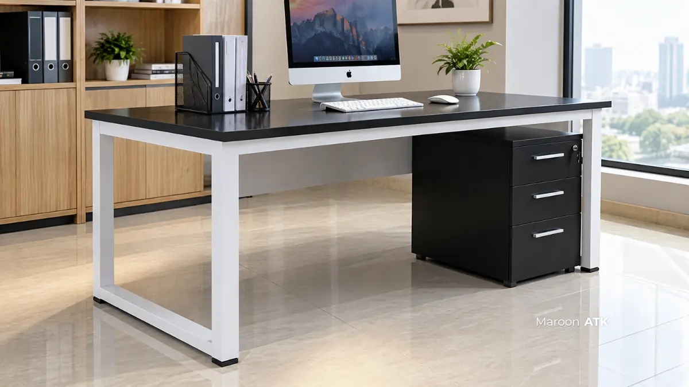

Kerugian finansial akibat furniture kayu olahan yang cepat melengkung karena kelembapan pendingin udara (AC) kantor, atau bahkan keropos hancur dimakan koloni rayap bawah tanah, menjadi keluhan klasik yang sering dihadapi bagian purchasing dan manajer umum perusahaan di Indonesia.
Ketika investasi pengadaan furniture kantor bernilai puluhan hingga ratusan juta rupiah terancam rusak hanya dalam waktu 2 hingga 3 tahun, perusahaan harus mengeluarkan biaya perbaikan berulang yang sebenarnya dapat dihindari sejak tahap perancangan awal.
Sebagai solusi permanen, standar pengadaan modern beralih pada material tahan cuaca ekstrem: perpaduan rangka besi kokoh dan permukaan berlapis High Pressure Laminate (HPL). Ulasan berikut membandingkan ketahanan material serta membedah kebutuhan spesifik pengadaan custom furniture di lima kota besar Indonesia.
Mengapa Harus Beralih ke Kombinasi Rangka Besi dan Pelapis HPL?
Kombinasi rangka besi dan pelapis HPL pada custom furniture kantor menawarkan ketahanan mutlak terhadap serangan rayap, struktur yang tidak mudah melengkung, serta perawatan yang jauh lebih hemat dibanding kayu solid atau partikel olahan (MDF).
Kayu solid dan papan partikel (particle board/MDF) memang memberikan kesan visual hangat. Namun, kedua material tersebut memiliki pori-pori yang sangat aktif menyerap uap air dari udara, terutama di ruang kantor tertutup yang suhunya berubah drastis antara jam operasional ber-AC dingin dan malam hari yang lembap.
Kondisi lembap ini mempercepat proses pelapukan internal dan menciptakan ekosistem ideal bagi rayap untuk bersarang. Rangka besi sama sekali tidak mengandung zat selulosa—komponen organik yang menjadi sumber nutrisi utama rayap. Dengan demikian, rangka besi secara biologis 100% kebal terhadap kerusakan hama.
Sementara itu, pelapis HPL (High Pressure Laminate) diproduksi melalui tekanan dan suhu tinggi sehingga memiliki kerapatan permukaan tanpa pori mikro. HPL tidak hanya tahan terhadap tumpahan air, kopi, dan goresan benda tajam, tetapi juga melindungi lapisan multipleks di bawahnya dari paparan kelembapan berlebih yang dapat memicu jamur.

Cara Memilih Jasa Custom Furniture Kantor Jakarta dengan Layanan Desain 3D
Simulasi layout ruang kerja dan presisi gambar kerja visualisasi 3D sebelum proses fabrikasi furniture dimulai.
Apa Saja Katalog Custom Furniture Kantor Anti Lembap dari MAROON ATK?
Katalog custom furniture kantor anti lembap dari MAROON ATK mencakup meja kerja staf modular, lemari arsip baja pintu geser, kursi direktur hidrolik, dan set sofa tamu dengan material rangka besi berlapis powder coating, permukaan HPL, dan pelapis kulit sintetis oscar.
MAROON ATK menyediakan berbagai lini unit modular yang dirancang secara khusus untuk menjawab kebutuhan ruang kerja komersial dengan daya tahan jangka panjang:
- Meja Kerja Staf Minimalis (120x60 cm): Menggunakan rangka hollow besi berkekuatan tinggi dengan finishing powder coating anti karat dan top table multipleks berlapis HPL tebal 0.8 mm. Sangat ideal untuk ruang kerja terbuka, cubicle, atau workstation kelompok.
- Lemari Arsip Besi Pintu Geser Kaca: Menggunakan pelat baja canai dingin (cold-rolled steel) berlapis cat oven powder coating. Pintu kaca geser memudahkan inventarisasi visual dokumen, bebas risiko pelapukan, dan 100 persen aman dari serangan rayap.
- Kursi Direktur Ergonomis: Dilengkapi penopang lumbar aktif dan pelapis kulit sintetis (oscar) bermutu tinggi yang tidak menyerap cairan, mudah diseka saat terkena debu, dan tahan terhadap kelembapan ruang kerja eksekutif.
- Set Sofa Tamu Korporat (Konfigurasi 3+1+1): Menghadirkan bantalan busa cetak (molded foam) density tinggi berlapis kulit oscar elegan pada rangka penopang kokoh, menyajikan kenyamanan formal bagi tamu pimpinan instansi.
| Jenis Material | Ketahanan Rayap | Ketahanan Lembap & AC | Rekomendasi Pemakaian |
|---|---|---|---|
| Rangka Besi Powder Coating | Sangat Tinggi (100% Kebal) | Sangat Baik (Tahan Karat) | Kaki meja kerja, lemari arsip dokumen, partisi modular |
| Pelapis HPL (High Pressure Laminate) | Tinggi (Permukaan Padat) | Sangat Tinggi (Pori Rapat) | Top table meja kerja, meja rapat, panel kabinet |
| Plywood / Multipleks Grade A | Sedang (Perlu Treatment) | Baik (Tergantung Pelapis) | Badan kabinet, rak buku custom, backdrop resepsionis |
| MDF / Particle Board Biasa | Rendah (Rentan Rayap) | Rendah (Cepat Memuai) | Tidak disarankan untuk area lembap atau ber-AC intensif |
| Kulit Sintetis (Oscar Premium) | Sangat Tinggi (Anti Jamur) | Sangat Baik (Mudah Dibersihkan) | Kursi direktur, sofa lobi tamu, kursi rapat pimpinan |

Meja kerja staf dengan struktur rangka besi kokoh dan pelapis HPL tahan gores, solusi ideal anti rayap untuk area kantor modern.
Apa yang Perlu Diperhatikan Saat Memesan Custom Furniture Kantor di Berbagai Kota?
Setiap wilayah metropolitan di Indonesia memiliki karakteristik iklim, kelembapan udara, dan infrastruktur gedung yang berbeda. Berikut analisis pertimbangan pemesanan custom furniture kantor di 5 kota besar:
1. Jakarta: Kepadatan Gedung Bertingkat & Akses Logistik
Sebagai pusat bisnis dengan konsentrasi gedung perkantoran vertikal di kawasan Segitiga Emas dan TB Simatupang, pemesanan custom furniture kantor di Jakarta umumnya melibatkan volume unit yang masif untuk mengisi beberapa lantai sekaligus. Tantangan utama terletak pada regulasi ketat manajemen gedung (building management), seperti pembatasan jam bongkar muat (loading dock) malam hari dan kapasitas lift barang. MAROON ATK menerapkan sistem penjadwalan presisi dengan armada logistik berpengalaman agar proses delivery tidak mengganggu ritme operasional kantor.
2. Surabaya: Iklim Pesisir Lembap & Korosi Udara Garam
Surabaya merupakan kota metropolitan pesisir dengan temperatur hangat dan tingkat kelembapan udara yang relatif tinggi. Kayu olahan tanpa pelindung rapat di Surabaya sangat rentan mengalami pelapukan dini dan pembengkakan engsel kabinet. Prioritas pengadaan di Surabaya wajib difokuskan pada rangka besi berlapisan cat oven ganda serta top table HPL dengan segel tepi (edge banding) PVC tebal guna mencegah penetrasi uap air pantai.
3. Malang: Suhu Dataran Tinggi Sejuk & Kelembapan Ruang Arsip
Terletak di dataran tinggi, Malang memiliki iklim sejuk dengan fluktuasi kelembapan udara yang cukup tinggi antara pagi dan malam hari. Institusi pendidikan tinggi, kampus swasta, serta dinas pemerintahan di Malang sering menghadapi masalah jamur pada lemari dokumen yang berada di ruangan berpenerangan minim. Penggunaan lemari arsip baja powder coating menjadi pilihan mutlak untuk menjamin keamanan arsip statis dari ancaman kelembapan dingin dataran tinggi.
4. Denpasar: Populasi Rayap Aktif Tropis & Konsep Resor Korporat
Bali memiliki iklim tropis pulau sepanjang tahun yang sangat mendukung pertumbuhan koloni rayap bawah tanah dan kumbang bubuk kayu. Banyak korporasi, kantor konsultan, dan fasilitas hospitality di Denpasar yang awalnya menggunakan furniture kayu alami harus mengganti seluruh interior mereka dalam 3 tahun karena serbuan rayap. Rangka besi hollow dan pelapis HPL bermotif serat kayu alami (woodgrain) menjadi jalan tengah sempurna: tetap menghadirkan estetika natural tanpa risiko dimakan rayap.
5. Makassar: Gerbang Bisnis Timur Indonesia & Paparan Udara Laut
Makassar sebagai episentrum komersial di Indonesia Timur memiliki paparan angin laut yang membawa partikel garam pemicu karat pada logam kualitas rendah. Standar fabrikasi MAROON ATK menggunakan pelat besi yang melalui proses pencucian asam (pickling & phosphating) sebelum penyemprotan electrostatic powder coating, sehingga furniture bebas karat dan tahan banting menghadapi iklim pesisir Makassar.

Portfolio Pengerjaan Custom Furniture Kantor Executive di Segitiga Emas Jakarta
Kajian instalasi interior ruang kerja direksi dengan perpaduan material berkualitas tinggi dan pengerjaan presisi.
Bagaimana Keamanan Pengiriman dan Pemasangan Custom Furniture Kantor Dilakukan?
Keamanan pengiriman custom furniture kantor MAROON ATK dijamin oleh sistem pengemasan modular knocking down yang dirakit langsung oleh teknisi bersertifikat di lokasi proyek tujuan tanpa risiko cacat struktur.
Sistem knocking down memungkinkan unit meja rapat besar, workstation staf, dan lemari arsip dikirim dalam bentuk panel-panel terurai yang diproteksi menggunakan busa foam sheet, bubble wrap berlapis, serta sudut pelindung karton tebal. Metode ini meminimalkan dimensi kargo pengiriman antar pulau dan meniadakan risiko benturan fatal selama perjalanan di kontainer ekspedisi laut maupun darat.
Setibanya di kota tujuan (baik di Jakarta, Surabaya, Malang, Denpasar, maupun Makassar), tim teknisi profesional MAROON ATK melakukan perakitan langsung di lokasi ruangan kantor Anda. Setiap sambungan fitting dikunci menggunakan baut baja presisi dan diinspeksi kelurusannya menggunakan alat waterpass digital.
Sebelum memutuskan anggaran final pengadaan interior, pastikan Anda juga menyelaraskan kebutuhan tata letak ruangan dengan perangkat multimedia interaktif terkini melalui panduan pengadaan interactive flat panel untuk sekolah dan instansi agar instalasi kabel dan tata ruang terintegrasi rapi sejak awal.
Untuk kebutuhan pengadaan kantor lainnya, Anda juga dapat melihat katalog lengkap alat tulis kantor satu atap, atau mempelajari rekam jejak penyedia kami di halaman tentang kami.
Konsultasikan Desain & Material Furniture Kantor Anda
Dapatkan bantuan perhitungan RAB, visualisasi layout 3D gratis, serta rekomendasi material anti rayap dan lembap bergaransi resmi dari tim ahli MAROON ATK.
Rangkuman Poin Penting
Memilih material furniture kantor berbasis rangka besi dan pelapis HPL merupakan langkah preventif cerdas guna menghentikan pemborosan anggaran akibat rayap dan kelembapan ruangan.
- Bebas Ancaman Hama: Rangka besi tidak mengandung selulosa sehingga rayap dan bubuk kayu tidak memiliki sumber makanan untuk bersarang.
- Proteksi Kelembapan AC: Permukaan HPL berkerapatan tinggi menahan rembesan uap air, mencegah pembengkakan panel dan jamur di ruang kerja tertutup.
- Logistik Aman Antar Kota: Sistem knocking down terbukti aman untuk pengiriman proyek skala besar ke Jakarta, Surabaya, Malang, Denpasar, Makassar, dan kota lain di Indonesia.
Optimalkan ruang kantor Anda dengan furniture berdaya tahan puluhan tahun bersama mitra procurement tepercaya MAROON ATK.
Pertanyaan yang Sering Diajukan
Rangka besi tidak mengandung selulosa yang menjadi sumber makanan rayap, sehingga secara alami bebas dari risiko kerusakan akibat serangan rayap.
HPL memiliki lapisan pelindung yang lebih rapat dibanding finishing kayu biasa sehingga lebih tahan terhadap perubahan kelembapan akibat AC kantor.
Ya, MAROON ATK melayani pengiriman dan pemasangan custom furniture kantor ke Jakarta, Surabaya, Malang, Denpasar, Makassar, dan kota lain di Indonesia.

Asher Angelica
Praktisi procurement dan konsultasi interior korporat yang berfokus pada standarisasi material ramah lingkungan, durabilitas furniture anti rayap, dan efisiensi tata ruang kantor di Indonesia.